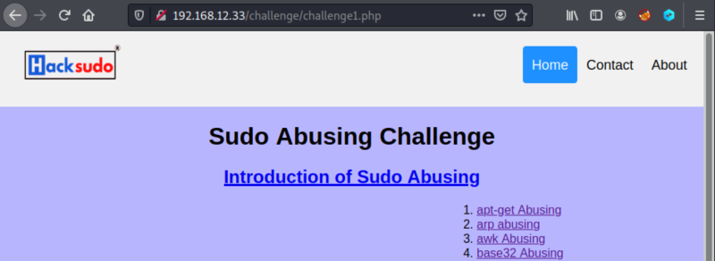
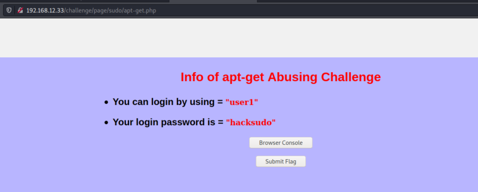
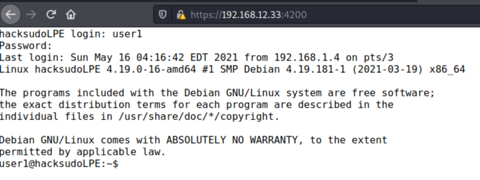
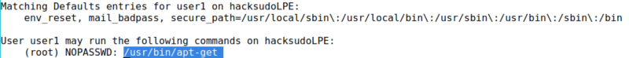

3.1 Trying apt-get Abusing Challenge
This site has several challenge. Click on “Challenge 1 -> Details" button.

1. Visit “apt-get Abusing”.

2. Click on the “Browse Console” button. You'll be redirected to a page like shell. Introduce the credentials you have in this screen.

Now you can type any command.
3. Look for “sudo” permissions.
user1@hacksudoLPE:~$sudo -l
Output:

You can run as “root” the “apt-get” command.